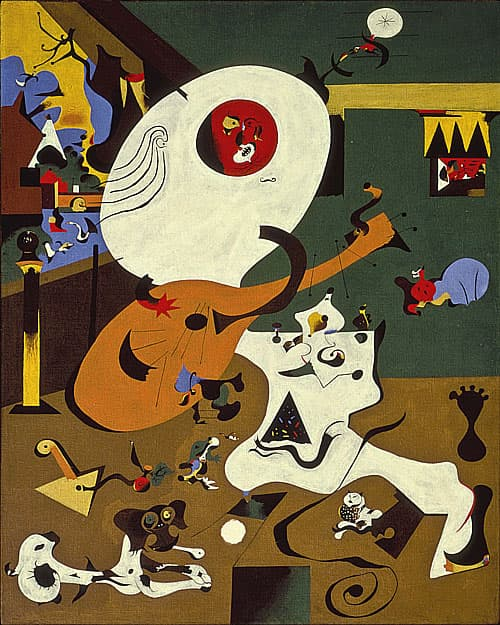
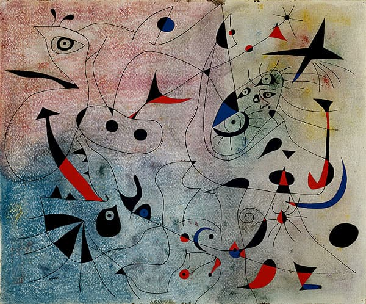
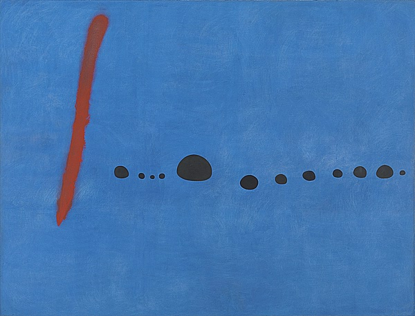

米羅(Joan Miro i Ferrà)
出生：1893年4月20日。西班牙巴塞隆納
逝世：1983年12月25日（90歲）西班牙馬約卡帕爾瑪
墓地：巴塞隆納的蒙特惠奇公墓
知名於：繪畫、雕塑、壁畫
影響：超現實主義
配偶：瑪麗·皮拉爾
父親：是一位金匠和鐘錶匠。
米羅14歲時進入巴塞隆納的St. Luke藝術學院學習
代表作為1957年到1959年間創作的兩項陶壁作品——太陽和月亮之壁。
畫風介紹
米羅的畫風，總是有一種天真、無邪、貪玩的風格。他以有限的記號要素還原作畫，達到現代畫自由表現的境地，作品幻想雖神秘，表現卻明晰，畫面充滿了隱喻、幽默與輕快，表現孩童般的純樸天真，並且富有詩意。他主張繪畫所表現的神秘, 必須以具體的自然形象作基礎。
他的畫通常是架構於平面的底層加上明亮的色彩，尤其是藍、紅、黃、綠、黑這幾種顏色，無形狀的阿米巴圖(Amorphous Amoebic)成形於銳利的線條、點及花色，完全以不協調的架構成圖。後來又畫了幾幅一般化及像空氣般的作品，以減少抽象的點、線、及爆發的顏色架構而成。
米羅的藝術乍看起來，像抽象的象形文字，但都是根據清晰及富有條理的圖形構思出來的。
畫家簡介：
米羅是加泰隆尼亞畫家、雕塑家、陶藝家、版畫家，超現實主義的代表人物。從小時候，米羅就對於大自然的風景非常熱愛，對於自己成長的地方更是如此。畫畫對於安靜及敏感的他來說，似乎是一種習以為常的工作。他的父親對於天文很有興趣，而此興趣多少也影響到米羅。同時，他也有著對藝術的敏銳。喜愛繪畫女人、小鳥、太陽、星星等，並以自創符號及色塊構成，成為獨特的個人風格。與畢卡索、達利並列西班牙後現代三大藝術家。蒙特惠奇山有米羅美術館收藏米羅的作品。
畫作精選：
米羅早年接觸過許多前衛藝術家，如凡高、馬蒂斯、畢卡索、盧梭等人的作品，也嘗試過野獸派、立體派、達達派的表現手法。逐步形成了完全屬於自己的藝術風格。
他的畫充滿了詩意與童趣，作品畫面充滿了隱喻、幽默與輕快，深受大人與小孩喜愛。除了繪畫以外，他還有許多雕塑、陶藝、版畫作品，被稱為「把兒童藝術、原始藝術和民間藝術揉為一體的大師」。

work 1 荷蘭室內景一號
Dutch Interior I(1928)這幅畫是根據荷蘭畫家索爾格﹝H. M. Sorgh﹞的一幅作品《彈詩琴者》﹝The Lute Player﹞轉畫而成。整個場面在一個塗有三色的兩壁和地板為界的室內展開.房間的中央樂器和演奏師融為一體；在其下面.有一隻狗在啃骨頭.一隻貓在玩線球.一隻蛤蟆追逐著一個蟲子.而餐刀正在為蘋果削皮；在畫面的左邊有一扇窗.窗外有一條河、一座橋、一條魚、一個天鵝和一些房屋。當代許多畫家喜歡「參照」過去大師們的作品，按照 新的方式和畫家自己的風格，去重現過去作品中描繪的環 境氣氛人物。對於荷蘭畫家 H.M. 索爾格的「琪琶演奏 者」，米羅只不過是想藉其畫面結構再加以繪製，因為在 這種結構中，能夠表現他的風格和情緒。 我們看到琵琶演奏者脧蹺在腿上坐著，在他邊上是一 個靠著桌子的女人，桌子脧旁有一隻狗和一隻貓，左邊， 窗簾被風吹起，從那裡可以看到阿姆斯特丹的房屋。在繪 製此畫時，米羅使用了他繪畫的兩個特點：一方面喜歡追 求細節和精確性；另一方面，他運用夢幻能力，在夢裡的 形像中找到產生靈感的泉源。使得畫面上有上百個細節、 事物和動物，充滿了歡樂的節日氣氛。

work 2 晨星 (1940)
Morning Star米羅搬到了瓦倫維爾，開始畫有名的「星座」系列。在「星座」系列的畫裡，我們可以看到許多像星星的小原點，還有很多細細的線，把這些星星連在一起，這樣子，所有的小原點就組成了一個星星的網。米羅共畫了23幅星座系列作品，《晨星》是其中一幅。當時正逢二次世界大戰，巴黎就要被德軍佔領，米羅逃到諾曼第鄉下，與音樂、星空為伴，他隱藏在自己的繪畫世界，揉合詩與夢的超現實意象，各種細密符號和線條都是他的作畫特點。
对于艺术家来说，这是最可怕，最绝望和最困难的时期。1940年，德军入侵法国-米罗再次被迫逃亡，经过炸弹袭击和炮弹轰鸣。 Miro只有一个投资组合，他拿了10张现成的带有“星座图”的纸和空纸用于新纸。
米罗从一包中取出38 x 46厘米大小的相同纸张。所有完成的作品都始终在他的眼前-它们必须创造一个单一的艺术空间，成为一个空间，必须保持并保持单一的冲动。
Miro使用复杂的技术对整个系列进行处理：他在每张纸上进行研磨，喷涂，分层稀释的水粉和油漆，然后在这种复杂的背景上仔细细心地绘制散布的元素，卷曲和彩色的点。在这里，您可以看到类似鸟喙，翅膀或翅膀的人物，您可以找到星星或人物，尾巴或烟囱的人物。但是，就像天体星座一样，它们以分散的单个恒星的形式存在，并且仅通过凝视的力就被组装成一个假想的人物，米罗的绘画中的元素也需要同样的想象力。轻轻地连接不同的对象并收集整个图片。

work 3 藍色二號（1961）
油彩、畫布。米羅認為藍色是最自然的顏色，也是夢境的色調，彷彿置身在浩瀚的藍色宇宙之中。這是一幅思考性極高，也是米羅赴美受到抽象表現藝術震撼後的作品。米羅作品《藍色二號》尺幅非常巨大(270x355公分)，運送過程特別艱辛，由於這件作品的特製木箱無法在機艙內直立，主辦單位特別定製了一個支架讓木箱斜立，以在運送時確實固定。
《藍色二號》作於1961年，是米羅在赴美受到抽象表現藝術震撼後的作品，相對於歐陸自文藝復興以來試圖掌握重現外在、觀眾猶如透過「一扇窗」挑望世界的傳統，米羅希望觀眾就沈浸在畫中，畫作就猶如一座游泳池般讓人神遊，這也解釋了何以這幅畫作何以如此巨大。
米羅運用他覺得最自然的顏色，也稱為是夢境的顏色「藍色」來創作（米羅曾在1920年代繪了一幅藍色的畫作，自述其為「我夢境的顏色」。），他希望觀賞者可以沉浸在畫中，畫作就有如一片大海與人類的溝通，充滿定、靜的精神。
《藍色二號》的哲學觀跟東方思想有其共通之處，觀者必須放空後進入作品，猶如進入宇宙與大自然，這其實是類似宗教的儀式，人與作品在觀賞過程中將會達到和諧完滿的狀態。
由於受到抽象派繪畫的啟發，米羅自1959年開始創作大型的作品，這一幅《藍色二號》就是在三個不同時間下同一主題的系列作品中的一幅。米羅以極簡約的點、線符號和最單純的紅、黑兩色來強調這片藍，充分將他在造型及詩意上的功力表露無遺。
讓人彷彿置身在浩瀚的藍色宇宙中，空氣和光線在顫動著，感覺像白晝、但卻又像黑夜。您知道嗎？在創作這件作品時，藝術家可是歷經了一段很長時間的思考和研究，恣意的在這片藍色夢幻中解放自我，他把這個過程比喻成「像是舉行宗教儀式之前的準備工夫」。